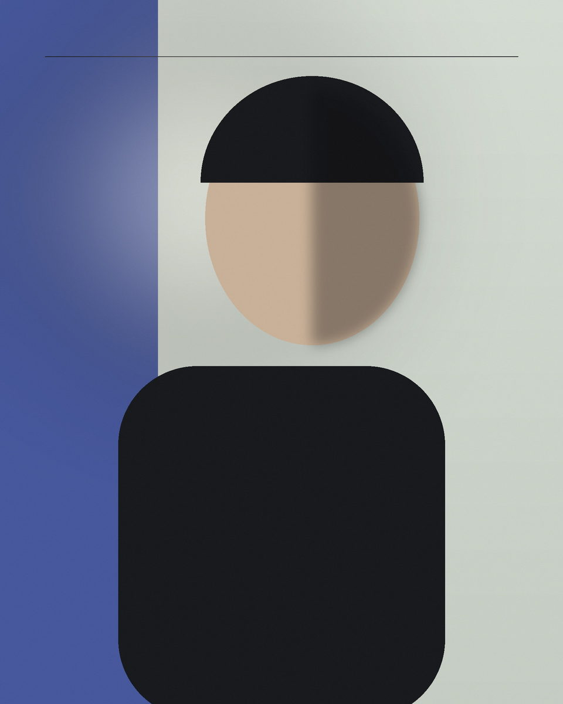

PRACTICE 02Portraits
Presence,
made visible.
Artist press, editorial, personal branding, graduation portraits, and creative commissions where the work supports the use.

02.APortraits / Observed
Character before performance.
Expression, gesture, environment, and available light—images that feel attentive rather than over-directed.
02.BPortraits / Constructed
An idea built together.
Stylized lighting, deliberate color, location or studio concepts, and a clear visual premise.